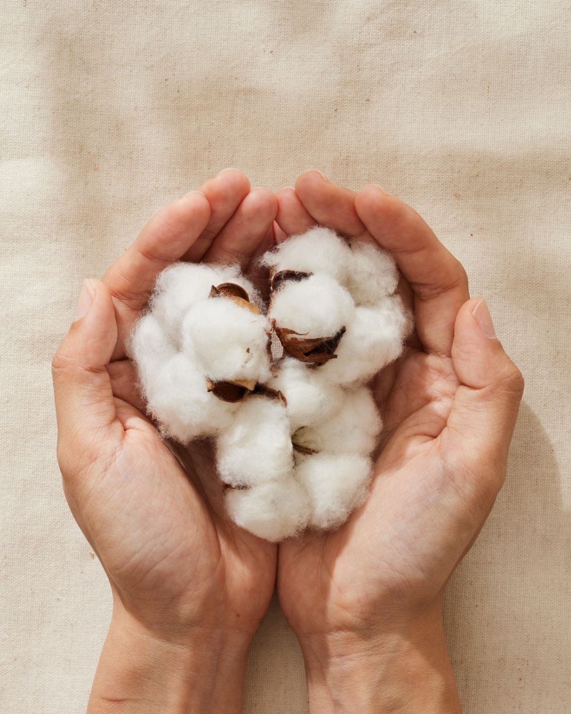

綿 (Cotton)
究極の清浄綿、肌を慈しむ
私たちが使用するコットンは、厳選された最高級の長繊維綿です。柔らかく、肌に優しく、優れた吸湿性と通気性を備えています。日常の装いから特別な瞬間まで、あらゆるシーンで快適さを提供します。
季節を問わず着用できるコットンは、洗濯を重ねるごとに柔らかさが増し、着る人に馴染んでいきます。それは、まさに「肌を慈しむ」素材なのです。
究極の清浄綿、肌を慈しむ
私たちが使用するコットンは、厳選された最高級の長繊維綿です。柔らかく、肌に優しく、優れた吸湿性と通気性を備えています。日常の装いから特別な瞬間まで、あらゆるシーンで快適さを提供します。
季節を問わず着用できるコットンは、洗濯を重ねるごとに柔らかさが増し、着る人に馴染んでいきます。それは、まさに「肌を慈しむ」素材なのです。
風を通す、時の流れを愉しむ
リネンは、その独特の質感と清涼感で知られる、夏の装いには欠かせない素材です。優れた吸湿性と速乾性により、暑い季節でも快適に過ごすことができます。
時間と共に深まる風合いは、リネンの最大の魅力です。使用を重ねるごとに、より柔らかく、より美しく変化していきます。「時の流れを愉しむ」— それは、リネンがもたらす特別な体験なのです。
静かなる贅沢、第二の皮膚
シルクは、その上質な光沢と滑らかな質感で、特別な瞬間を彩る最高の選択です。天然のタンパク質繊維であるシルクは、肌に優しく、温度調節機能にも優れています。
「静かなる贅沢」— 派手さではなく、内側から滲み出る上品さ。シルクは、着る人を包み込み、第二の皮膚のように寄り添います。特別な日の装いとして、長く愛用していただけます。
自然の調和、機能と美の交点
異なる素材の特性を活かし、最適な比率で組み合わせた混紡素材は、機能性と美しさを両立させます。コットンとリネンの組み合わせ、シルクとコットンの融合など、それぞれの素材が持つ良さを引き出します。
「自然の調和」— 異なる素材が織りなす、新しい可能性。混紡は、機能と美の交点に位置し、より多様なニーズに応えることができます。